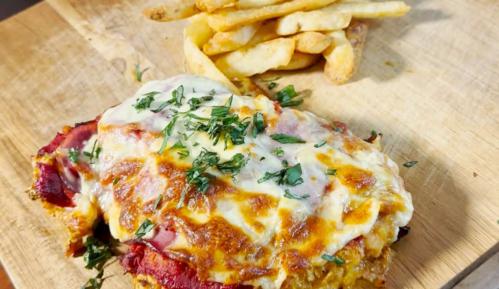

Anabolic Parmy

20 minutes
378 kcal • 54g protein • 7g fat • 53g carbs
Ingredients
- 140g Chicken Breast (weighed raw)
- 20g English Style Leg Ham (Brand:
- Don, 2 Slices)
- 30g corn flakes
- 35g Egg Whites (or 1 egg)
- 35g Garlic, onion & herbs pizza
- sauce (Leggo's)
- 25g Light Shredded Mozzarella
- Cheese (Coles)
- 1 Tsp Garlic Powder
- 1 Tsp Paprika
- 1 Tsp Italian Herbs
- Basil or parsley to garnish
Steps
- Start by weighing 140g of chicken breast & beat to flatten. (I used a wooden dough roller)
- Crush corn flakes in zip lock bag with garlic powder, paprika, Italian herbs, salt and pepper
- Once crushed pour the corn flakes onto a plate & in a separate bowl add 35g of egg whites.
- Soak the chicken breast in the egg whites then place it on the plate with the blended corn thin & coat both sides evenly, this will create the coating for the chicken breast.
- Bake the chicken breast in the oven at 220 degrees celsius for 20 minutes. (flip over half way through at the 10 minute mark)
- Once the chicken is cooked atop with leg ham, pizza sauce and light mozzarella cheese in that order.
- Bake in the oven again at 220 degrees celsius for 5 minutes until the cheese has melted
Source: “Healthy Meals that DON'T SUCK 2025” (PDF) — page 35